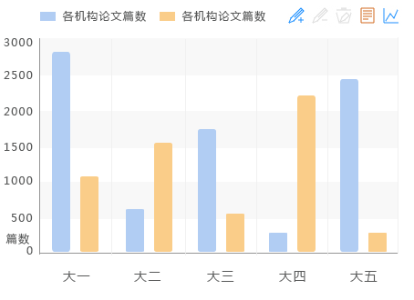
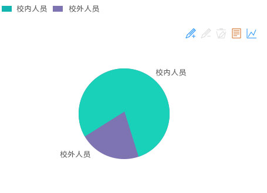

我校发表著作数单位分布

我校发表著作数历年变化趋势

历年校内、校外人员著作贡献率变化趋势

校内、校外人员著作贡献率对比

著作、教材数据列表
| 作者单位 | 作者姓名 | 校内外人员贡献率 | 著作名称 | 出版单位 | 出版字数 | 出版时间 | |
| 1 | 物理与电子工程学院 | 张继才dfg | 1:0 | 电子技术基础实验 | 电子工业出版社 | 23万 | 2014-08-12 |
| 2 | 物理与电子工程学院 | 张继才ddfg | 1:0 | 电子技术基础实验 | 电子工业出版社 | 23万 | 2014-08-12 |
| 3 | 物理与电子工程学院 | 张继才dskjfh | 1:0 | 电子技术基础实验 | 电子工业出版社 | 23万 | 2014-08-12 |
| 4 | 物理与电子工程学院 | 张继才、张继才 | 1:0 | 电子技术基础实验 | 电子工业出版社 | 23万 | 2014-08-12 |
| 5 | 物理与电子工程学院 | 张继才 | 1:0 | 电子技术基础实验 | 电子工业出版社 | 23万 | 2014-08-12 |